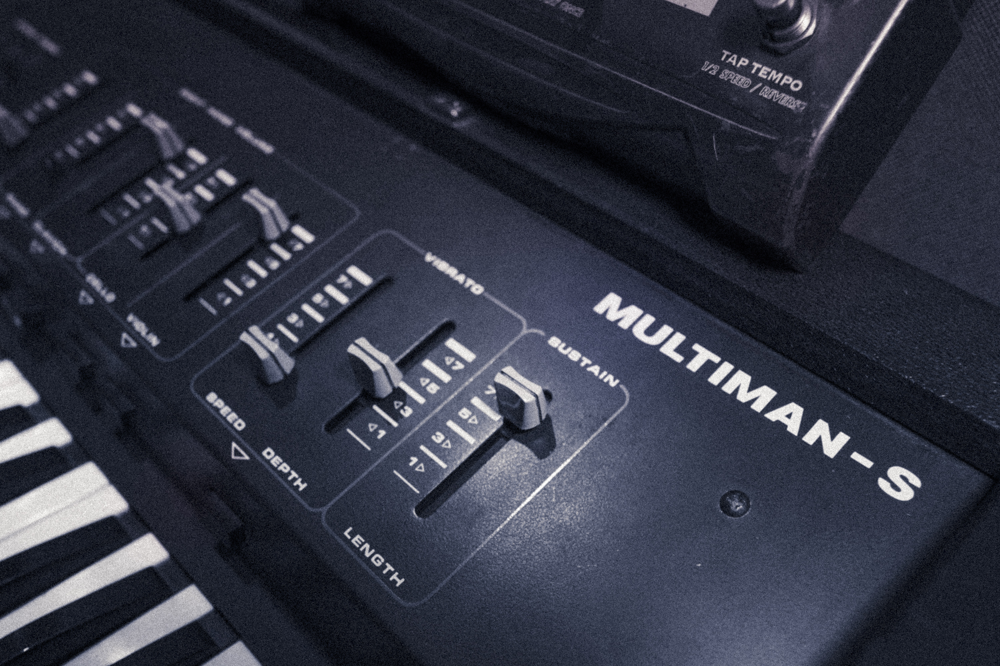

A precision isolation space acoustically tuned for transparency and warmth — in direct line of sight from the control room.
The Vocal Booth at Salvation Studios is a dedicated precision isolation space designed for lead vocals, overdubs, and spoken word. Acoustically tuned by John Flynn for a sound that is transparent and warm — capturing a vocalist's true character without colouration. The booth sits in direct line of sight from the control room, maintaining the visual connection between artist and engineer that's essential to a great performance.
A variable acoustic treatment system allows the room's character to be adjusted from the lively end of neutral to a fully dead recording environment — ideal for both intimate vocal takes and more present, roomy feels.

An acoustically perfect environment for capturing lead vocal performances — from intimate singer-songwriter takes to powerful belt vocals.
An ideal environment for podcasts, voiceovers, audiobooks, and broadcast. The controlled acoustic ensures a clean, professional result.
The booth's isolation and acoustic character also makes it ideal for acoustic guitar, violin, and other instruments requiring a controlled environment.
Available as part of a full session or as a standalone overdub booking. Get in touch to discuss.